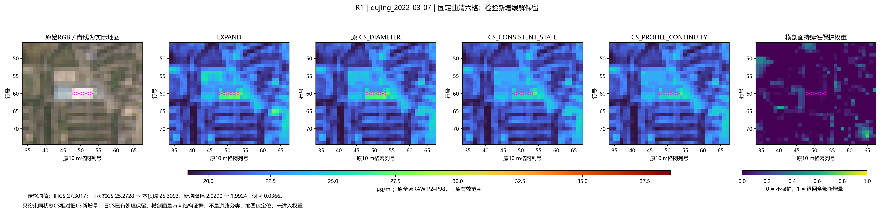
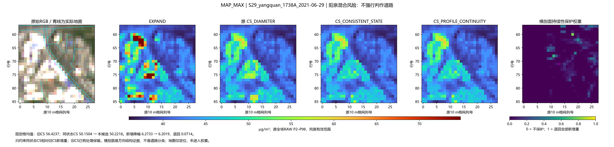
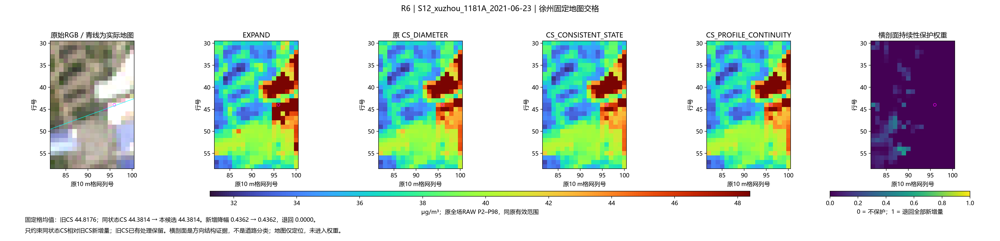
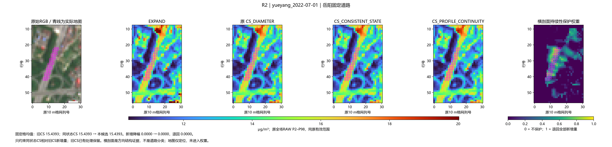
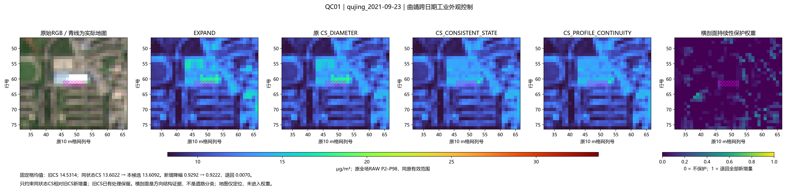
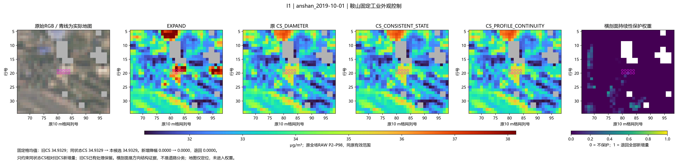

206场；同原支持、同场RAW色限。只保护相对旧CS的新增处理，旧CS自身收益保留。
完整结果与局限 · 固定机制 · 固定例 · 全组摘要 · 道路与QC/AC完整表
qujing_2022-03-07：原新增降幅 2.0290 → 1.9924，退回 0.0366 μg/m³。

S29_yangquan_1738A_2021-06-29：原新增降幅 6.2733 → 6.2019，退回 0.0714 μg/m³。

S12_xuzhou_1181A_2021-06-23：原新增降幅 0.4362 → 0.4362，退回 0.0000 μg/m³。

yueyang_2022-07-01：原新增降幅 0.0000 → 0.0000，退回 0.0000 μg/m³。

qujing_2021-09-23：原新增降幅 0.9292 → 0.9222，退回 0.0070 μg/m³。

anshan_2019-10-01：原新增降幅 0.0000 → 0.0000，退回 0.0000 μg/m³。
